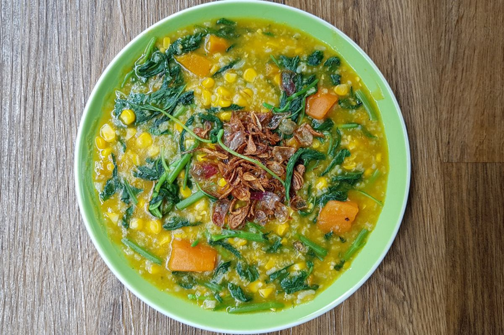
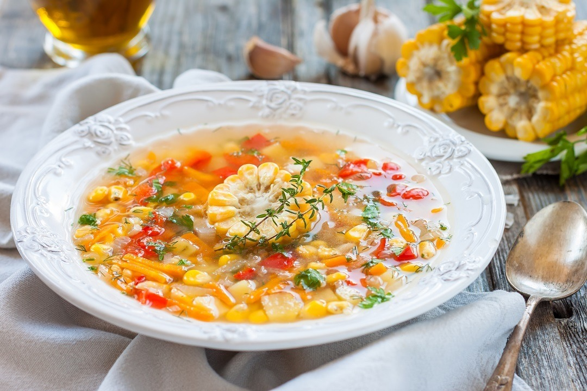

6 Menu Makanan Khas Sulawesi Utara 🌿

Tinutuan (Bubur Manado)
Bubur khas Manado yang kaya sayuran seperti kangkung, bayam, dan jagung, sangat sehat dan lezat.
Bahan-bahan:
- 200 gr beras
- 100 gr jagung manis pipil
- 100 gr labu kuning, potong dadu
- 100 gr bayam
- 100 gr kangkung
- 2 batang daun bawang, iris
- 3 siung bawang merah, iris
- 3 siung bawang putih, cincang
- 1 liter air
- Garam dan lada secukupnya
Cara membuat:
- Cuci beras, jagung, dan labu, rebus bersama air hingga beras lunak dan mengental menjadi bubur.
- Tumis bawang merah dan bawang putih hingga harum, masukkan ke dalam bubur.
- Tambahkan bayam, kangkung, dan daun bawang, masak hingga sayur layu.
- Beri garam dan lada sesuai selera, aduk rata dan sajikan hangat.

Paniki
Masakan khas Manado dari daging kelelawar yang dimasak dengan santan dan bumbu rempah khas.
Bahan-bahan:
- 500 gr daging kelelawar (atau bisa diganti ayam)
- 200 ml santan kental
- 5 siung bawang merah
- 3 siung bawang putih
- 5 cabai merah
- 2 cm jahe
- 2 batang serai, memarkan
- Daun kemangi secukupnya
- Garam dan gula secukupnya
Cara membuat:
- Rebus daging hingga empuk, tiriskan.
- Haluskan bawang, cabai, dan jahe, tumis hingga harum bersama serai.
- Masukkan daging dan santan, masak hingga bumbu meresap dan kuah mengental.
- Tambahkan daun kemangi, aduk sebentar, angkat dan sajikan.

Tinutuan Jagung
Varian bubur Manado menggunakan jagung sebagai bahan utama dengan tambahan sayuran segar.
Bahan-bahan:
- 300 gr jagung manis pipil
- 100 gr beras
- 100 gr bayam
- 100 gr kangkung
- 2 batang daun bawang, iris
- 3 siung bawang merah, iris
- 3 siung bawang putih, cincang
- 1 liter air
- Garam dan lada secukupnya
Cara membuat:
- Rebus jagung dan beras dengan air hingga menjadi bubur kental.
- Tumis bawang merah dan bawang putih hingga harum, masukkan ke dalam bubur.
- Tambahkan bayam, kangkung, dan daun bawang, masak hingga sayur layu.
- Beri garam dan lada, aduk rata dan sajikan hangat.

Binte Biluhuta
Sup jagung khas Gorontalo dengan ikan dan rempah yang segar dan lezat.
Bahan-bahan:
- 200 gr jagung manis pipil
- 200 gr ikan segar (biasanya ikan kakap)
- 3 siung bawang merah
- 2 siung bawang putih
- 2 buah tomat
- 2 batang daun bawang
- Garam dan merica secukupnya
- 1 liter air
Cara membuat:
- Rebus jagung dengan air hingga lunak.
- Masukkan ikan, bawang, dan tomat, masak hingga ikan matang.
- Beri garam, merica, dan daun bawang, aduk rata dan angkat.
- Sajikan hangat sebagai sup segar khas daerah.

Ayam Woku
Ayam berbumbu pedas dan harum dengan rempah khas Sulawesi Utara.
Bahan-bahan:
- 1 ekor ayam, potong-potong
- 5 siung bawang merah
- 3 siung bawang putih
- 5 cabai merah keriting
- 2 batang serai, memarkan
- 2 cm jahe
- 5 daun jeruk
- Daun kemangi secukupnya
- Garam dan gula secukupnya
- Minyak untuk menumis
Cara membuat:
- Haluskan bawang, cabai, jahe, dan serai, tumis hingga harum.
- Masukkan ayam, aduk hingga berubah warna.
- Tambahkan daun jeruk, garam, dan gula, masak dengan sedikit air hingga ayam empuk dan bumbu meresap.
- Masukkan daun kemangi, aduk sebentar dan angkat.
- Sajikan dengan nasi hangat.

Pisang Epe
Camilan manis khas Manado dari pisang bakar dengan saus gula merah dan kelapa parut.
Bahan-bahan:
- 6 buah pisang kepok matang
- 200 gr gula merah
- 100 ml air
- Kelapa parut secukupnya
- Daun pandan 1 lembar (optional)
Cara membuat:
- Bakar pisang hingga matang dan agak kering, tekan perlahan agar pipih.
- Rebus gula merah, air, dan daun pandan hingga menjadi sirup kental.
- Siram pisang bakar dengan sirup gula merah dan taburi kelapa parut.
- Sajikan sebagai camilan manis dan lezat.